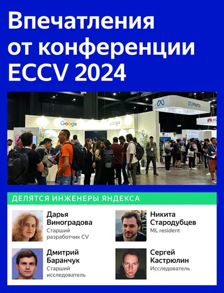
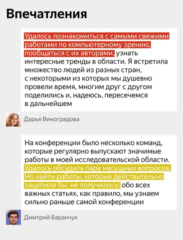
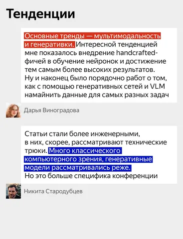
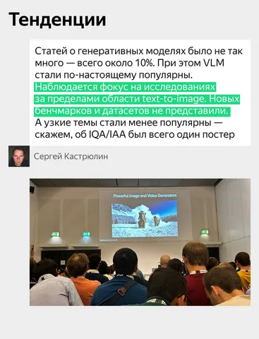
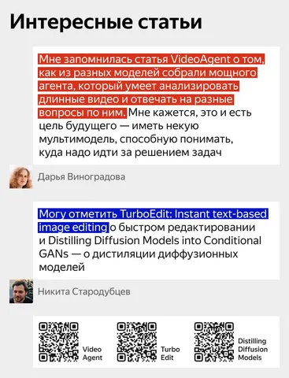
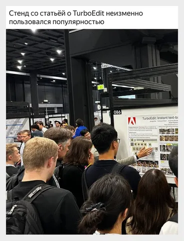
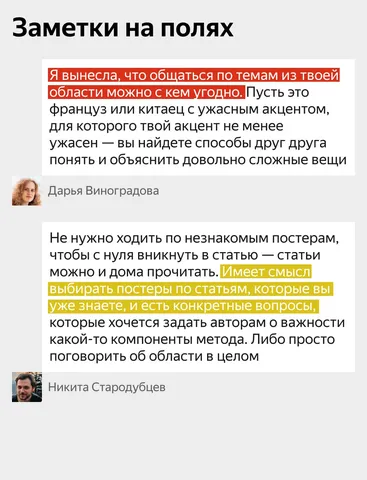

Мы попросили инженеров Яндекса подвести личные итоги конференции ECCV и рассказать, чем она запомнилась. О трендах в индустрии, интересных статьях и многом другом — в наших карточках.
А остальные посты по следам конференции вы можете найти в канале по тегу #YaECCV.
CV Time
